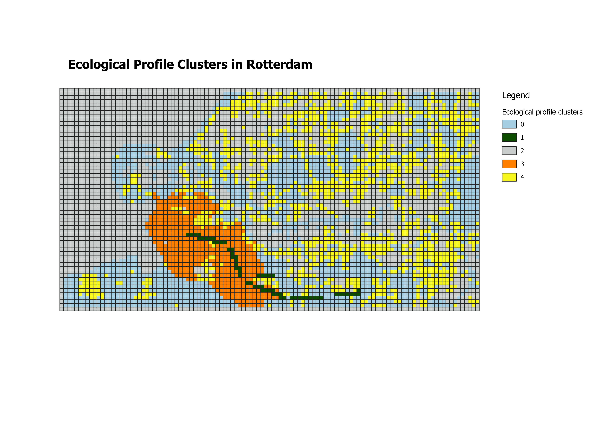
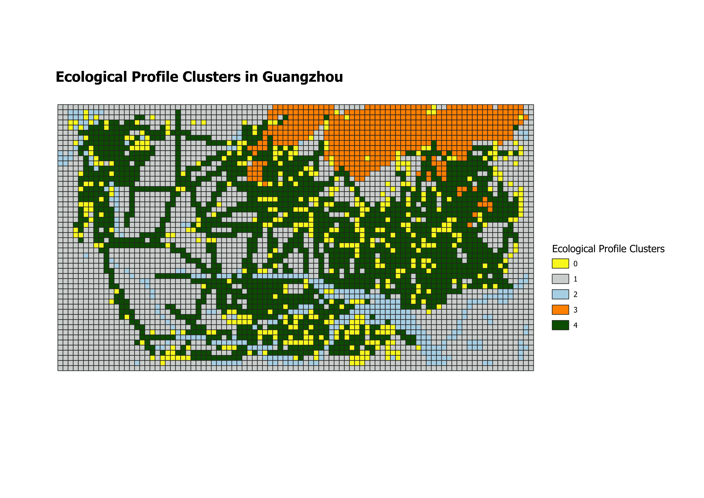
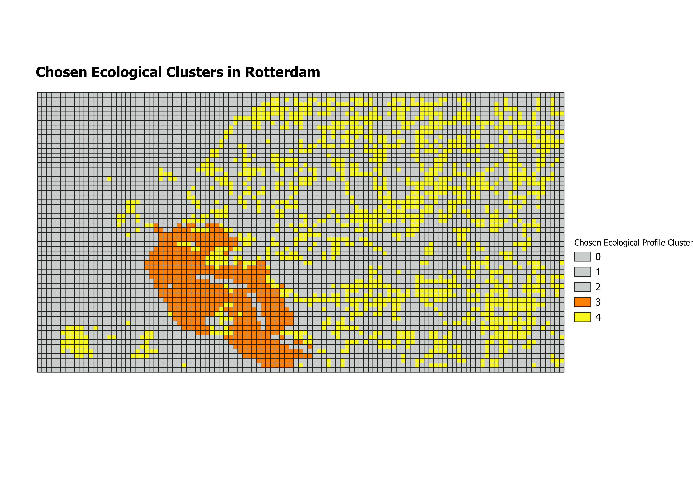
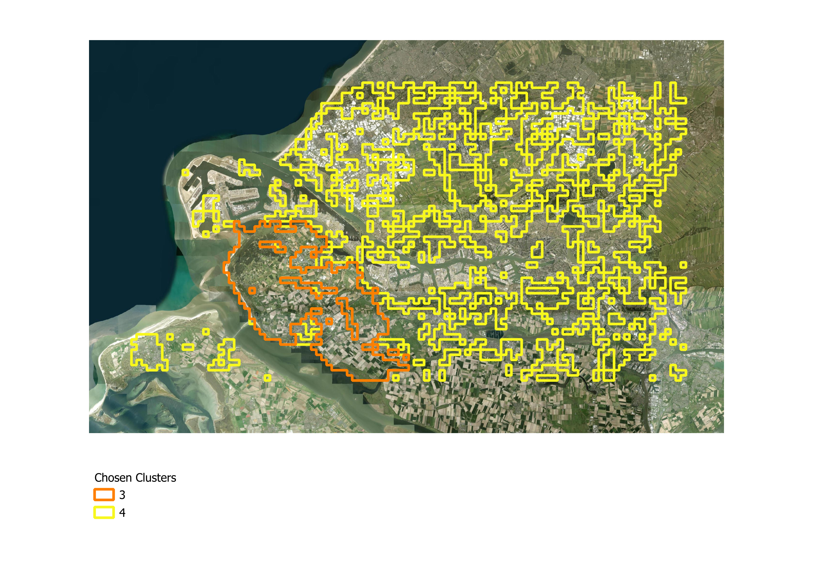
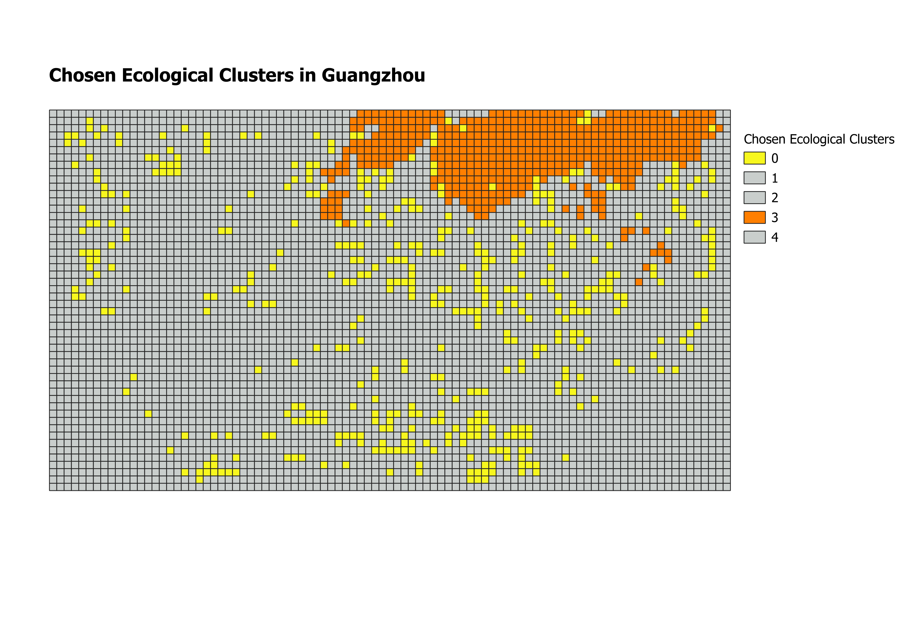
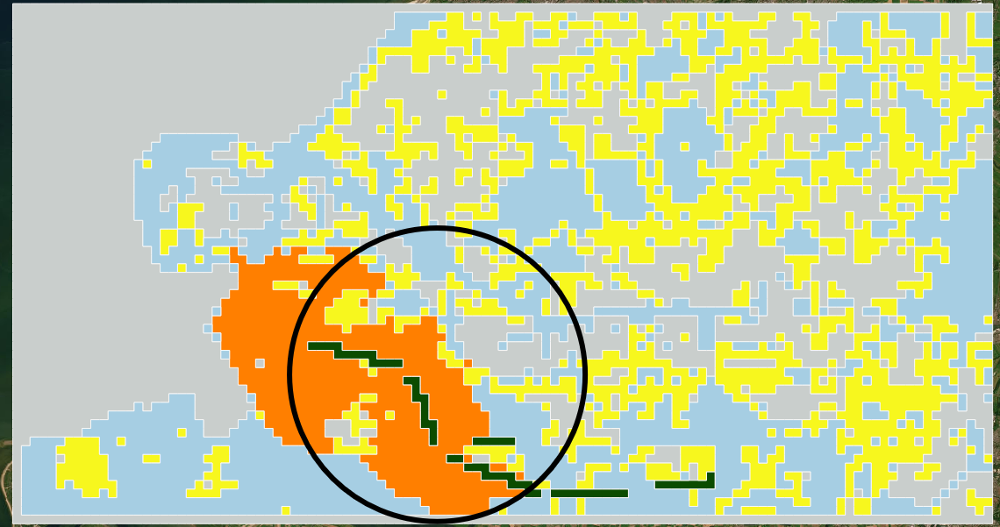
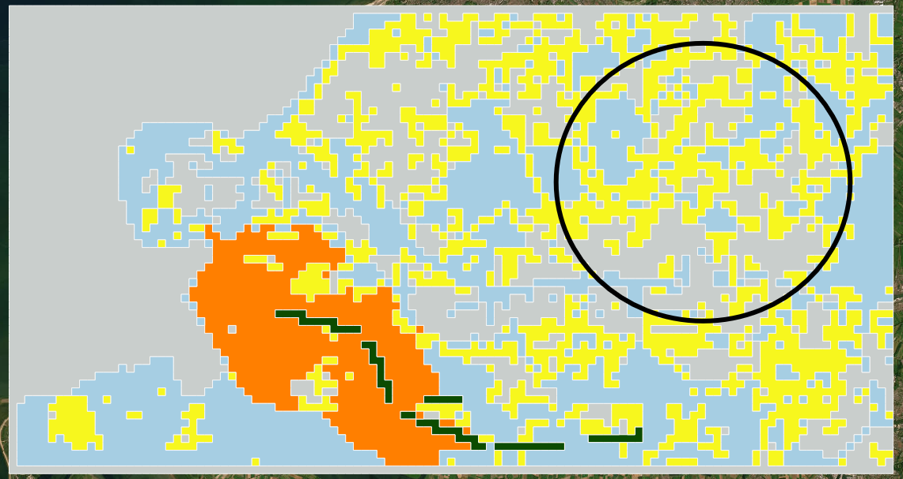
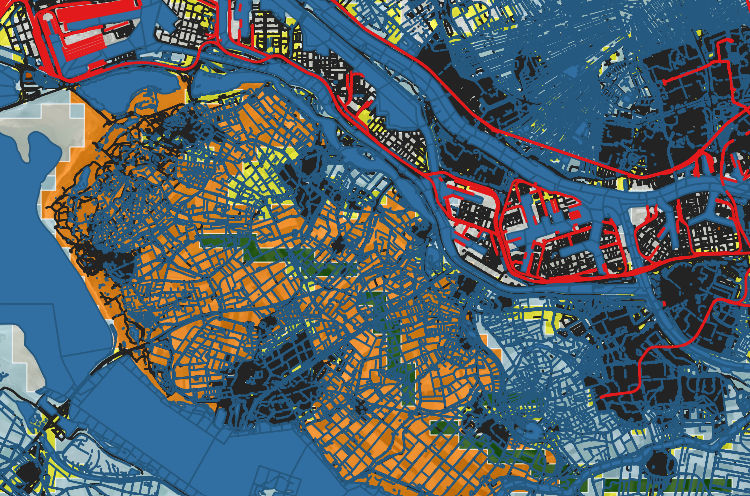

1 + 1[1] 2Project report of Group A
Delta cities - will add context on it later
Rotterdam and Guangzhou represent two contrasting delta city contexts. - to be added
ecological connectivty in delta cities - importance issue etc. - find a research gap
This study addresses this gap through the following research question:
To what extent does green infrastructure connectivity vary across urban areas in delta cities Rotterdam and Guangzhou, and what does this imply for targeted Nature-based Solutions?
The main objective of this research is to develop an informed Nature-based Solutions plan tailored to spatially comparable areas in both cities. The objective is explored and pursued using following steps: (1) assessing the current status of ecological connectivity using betweenness centrality and patch connectivity analysis; (2) identifying comparable areas across both cities based on a multi-criteria clustering approach combining Local Climate Zones, connectivity metrics, and patch characteristics; (3) conducting a deeper spatial analysis of these comparable areas; and (4) proposing targeted Nature-based Solutions for them.
Rotterdam overview
Guangzhou overview
Maps of both cities
maps to be added and small text
why we used it, how in rt and how in gz - mention dimensions !!!
A regular spatial grid of 500 × 500 m cells was constructed for each city in QGIS software (Vector → Research Tools → Create Grid), covering the set envelope boundary of each city. The grid was created specifically for the typology construction process, providing a consistent spatial unit for aggregating and comparing data layers (LCZ classes, betweenness centrality links, and green patches). It is not used in further analysis steps beyond typology construction and study area selection. why? - write more on that later also why 500x500m
To conduct the ecological connectivity analysis, the software of Grapnhab is used. Graphab is a software program devoted to the modelling of habitat networks using graph-theoretical approaches (Graphab, n.d.). Graph theory provides a simple solution for unifying and evaluating multiple aspects of habitat connectivity, because it can be applied at patch and landscape levels, and it quantifies either structural or functional connectivity (Minor & Urban, 2008). A graph network is represented by a set of nodes and edges, where the nodes are the individual elements within a network (the patches), and edges represent the connectivity between the nodes (links). Graphab combines the construction and visualization of graphs, with subsequent connectivity analyses and links with external geographical or biological data.
By loading the .tiff file created by the MSPA analysis, Graphab can read the landcover classification and filter on those accordingly. By filtering on land use code “17” to select the core areas as habitat patches, Graphab can then create a linkset to visualise all the possible connections between each habitat patch and use them for later calculations.
Now that everything is loaded into Graphab, we can then make use of the weighted metrics. To understand the importance of each patch and link, two different metrics are used. To run metrics calculations, you first need to create a graph. Here you select the linkset along with a distance threshold (it will only keep the links within this threshold). For the selected areas in Rotterdam and Guangzhou, multiple distances were tested to understand which number would give a meaningful result. With a short distance, it would result into giving too much importance to smaller links, but with a distance that is too large, it would not take the smaller links into consideration as much. We therefore landed on a value of 10 000m.
For the patches, delta Probability of Connectivity Index (dPC) is used. dPC measures how much overall connectivity (PC) drops when you remove a patch. It is a metric that measures the individual contribution of a specific habitat patch to the overall connectivity of the landscape. It represents the change in the PC index when a particular patch is removed, thereby assessing the importance of that patch in maintaining landscape connectivity. This metric is composed of three components: dPCintra, a measure of intrapatch connectivity, dPCconnect, the importance of a patch for connecting other patches together, and dPCflux, a measure of how connected a patch is to the network. The sum of these fractions equals the total delta Probability of Connectivity. This calculation was sadly only available for patches in Graphab, so for the links a different metric is used.
The links were classified through Betweenness Centrality (BC). It counts how many patch-to-patch routes pass through each link. It’s defined per element and works cleanly on edges, giving a differentiated value for every link: which “potential” connections act as the busiest throughways/bridges. It is a measure of how frequently a node appears on the shortest paths between pairs of other nodes in a network (SOURCE). Together, they form a complete picture revealing the critical habitats and the critical corridors between them. In our research, they are used as two complementary connectivity metrics, each appropriate to its element type.
For both metrics, the parameters dispersal distance (d) and probability (p) are asked to compute the calculations. Both refer to the chance of an animal moving from one patch to another, based on the distance between the patches, and the dispersal characteristics of the selected animal species. During this research, the animal species will not be identified, so therefore we take a dispersal distance of 500 m. This is a common default for urban green infrastructure studies. It represents medium-mobility species and also roughly matches human walking distance to green space. It’s considered good for general urban ecology assessments. The probability starts at a default of 0.5, meaning “at 500 m, there is a 50% chance of successful dispersal”. This is again a standard assumption since we don’t specify species.
After the calculations are computed, each patch and each link now contain dPC and BC values that can be categorised and visualised in QGIS. Here, the patches are visualised through a graduated symbology from green to yellow, where dark green marks a higher value. With five classes on equal intervals, the patches are ordered in importance. Dark green therefore means that once this patch would be removed, it would impact the overall connectivity the most. The links are filtered on the 500 most important once for each city (by selecting the 500 links with the highest BC value). They are then also visualised though a graduated symbology, this time on line thickness as well as colour. The thicker and darker the lines appear, the busiest the link appears to be in the network. Here however, all links would provide a big impact, since they are filtered on the 500 most important ones.
In the Results section, the outcome of this analysis for Rotterdam and Guangzhou is presented, which will be used as one of the inputs for the clustering analysis in the next section.
(Still add stuff about Conefor, limitations here already?)
Graphab. (n.d.). Graphab. https://thema.umlp.fr/productions/software/graphab/en/home.html
Minor, E. S., & Urban, D. L. (2008). A graph-theory framework for evaluating landscape connectivity and conservation planning. Conservation Biology, 22(2), 297–307. https://doi.org/10.1111/j.1523-1739.2007.00871.x
The delta Probability of Connectivity Index (dPC) (from metrovancouver Evaluation of Regional Ecosystem Connectivity 2025 - will add sources later)
To identify spatially comparable areas between Rotterdam and Guangzhou, a multi-criteria typology was constructed for each city based on three data layers: Local Climate Zones, ecological connectivity (betweenness centrality), and green patch characteristics. The typology boundaries were derived from the data itself through unsupervised clustering.
Quick info on what local climate zones are and where we got datasets for both cities. + two maps of lcz in both cities
A regular spatial grid was used as the common analysis unit for both cities, with all three criteria summarised per grid cell. Betweenness centrality values from the top 500 links were spatially joined to the grid using an intersection, with the mean normalised BC value computed per cell. Green patch metrics (patch count and mean patch capacity based on the dpc_sum field from Graphab) were similarly joined to the grid. Grid cells with no links or patches passing through them were assigned a value of zero, since they simply have no green connectivity (this is not missing data but a meaningful absence). Before clustering, all variables were standardised using z-score normalisation (StandardScaler) to ensure equal weighting regardless of original scale. K-means clustering (k=5) was then applied to the three variables: BC mean, patch count, and mean patch capacity; using the scikit-learn implementation in Python Console in QGIS. The number of clusters was set to five to produce interpretable ecological profiles while keeping sufficient differentiation between groups. After clustering, the dominant LCZ class per cluster was checked to understand what kind of urban environment each cluster is typically located in. This was done as a separate step after clustering, since LCZ is a categorical variable and including it directly in the K-means algorithm would have distorted the results.
Comparable study areas between Rotterdam and Guangzhou were identified by matching clusters across both cities based on similarities in their BC values, patch characteristics, and LCZ composition. Two pairs of comparable areas were selected based on the strength of the match across these three criteria. The spatial boundary of each study area was then defined by dissolving the corresponding cluster grid cells into a single polygon, which was used as the spatial unit for the subsequent deeper analysis.
Limitation: envelop (patches getting cut off)
K-means clustering of Rotterdam’s grid cells produced five ecological profiles. Table X presents the mean values per cluster for betweenness centrality, patch count, and patch capacity.
| Cluster | n | BC mean | Patches | Capacity | Interpretation |
|---|---|---|---|---|---|
| 0 | 1932 | 0.0078 | 0.77 | 0.036 | Transition zones: moderate connectivity, some patches |
| 1 | 60 | 0.5767 | 1.17 | 0.264 | Key corridors: very high BC, quality patches |
| 2 | 2730 | 0.0003 | 0.00 | 0.000 | Urbanised area: no connectivity, no patches |
| 3 | 512 | 0.0054 | 1.06 | 0.372 | Isolated quality patches: low BC, high capacity |
| 4 | 1546 | 0.0056 | 1.59 | 0.018 | Fragmented green: many small low-quality patches |
Cluster 2 is the largest group, representing the Urbanised area with no meaningful green network. Cluster 1, while the smallest (n=60), represents the most ecologically significant cells which are key corridor locations with both high betweenness centrality and quality patches. Cluster 3 are the areas with high-quality patches that are poorly connected to the broader network, dominated by LCZ D (low plants) with some LCZ A (dense trees) (here will add more on low bc means). Cluster 4 shows fragmented green distributed across LCZ 6 (open low-rise) and LCZ 8 (large low-rise) urban areas.

analysis of the map here
| Cluster | n | BC mean | Patches | Capacity | Interpretation |
|---|---|---|---|---|---|
| 0 | 459 | 0.3446 | 3.77 | 0.010 | Fragmented green in urban fabric: many small patches, high BC |
| 1 | 1947 | 0.0012 | 0.39 | 0.005 | Low connectivity urban: sparse patches, minimal BC |
| 2 | 317 | 0.1894 | 0.49 | 0.001 | Corridor cells: moderate BC through mostly non-green areas |
| 3 | 475 | 0.0855 | 1.07 | 0.393 | Isolated quality patches: low BC but high patch capacity |
| 4 | 1638 | 0.4292 | 0.82 | 0.016 | High BC urban: major corridors through dense urban fabric |
Guangzhou’s clustering reveals a different ecological structure than Rotterdam. High BC values are more widespread, reflecting the larger and denser green network of Guangzhou. Cluster 3, similar to Rotterdam’s Cluster 3, identifies isolated quality patches dominated by LCZ A (dense trees, n=419). Cluster 0 represnts fragmented green within the urban fabric, dominated by LCZ 6 (open low-rise) and LCZ 8 (large low-rise), comparable to Rotterdam’s Cluster 4.

analysis of the map here
Two pairs of comparable areas were identified based on similarity in ecological connectivity profiles and urban context.




Both clusters are characterised by isolated quality green patches with low betweenness centrality and high patch capacity (RT: 0.372; GZ: 0.393) and similar patch counts (~1.06–1.07 per cell). This makes them the strongest cross-city match in the analysis. However, the LCZ differ in these clusters: Rotterdam’s Cluster 3 is dominated by LCZ D (low plants, grassland/polder landscape) while Guangzhou’s is dominated by LCZ A (dense trees, forest). This reflects the different vegetation character of green spaces in each city. Despite this difference in vegetation type, both clusters represent the same ecological condition: high-quality green spaces that are underconnected to the broader green network. This makes them particularly relevant for targeted connectivity improvement through Nature-based Solutions.
The second pair was chosen due to its partial match based mostly on LCZ composition. Both clusters are dominated by LCZ 6 (open low-rise) and LCZ 8 (large low-rise), indicating similar urban fabric contexts. Patch structure is also somewhat comparable as both show fragmented green with low patch capacity. The main difference is in BC values (RT: 0.006; GZ: 0.345), depicting the overall higher connectivity in Guangzhou. This pair represents fragmented green in somewhat comparable urban form contexts. Here NbS interventions could focus on improving patch quality and increasing green cover.
The idea is to zoom in and look for smaller area with chosen clusters:

 Here we see that the orange cluster showing good quality patches with weak connectivty is surrounded mostly by framgmented low quality greens (cluster 2) and some 0 clusters (Transition zones — moderate connectivity, some patches) and there is some green (cluster 1), which indicate a small but significant presence of key corridors with very high BC and quality patches. This depict potential that the cluster 1 could be expanded (by leverging parts of orange cluster or connecting yellow areas (also improving their quality) around it. But then when looking at the whole ecological profile of rotterdam there are not any mor eorange clusters withing the area, which could motivate the second intervention (on yellow clusters with id 2) in other areas (maybe top right corner of the envelope).
Here we see that the orange cluster showing good quality patches with weak connectivty is surrounded mostly by framgmented low quality greens (cluster 2) and some 0 clusters (Transition zones — moderate connectivity, some patches) and there is some green (cluster 1), which indicate a small but significant presence of key corridors with very high BC and quality patches. This depict potential that the cluster 1 could be expanded (by leverging parts of orange cluster or connecting yellow areas (also improving their quality) around it. But then when looking at the whole ecological profile of rotterdam there are not any mor eorange clusters withing the area, which could motivate the second intervention (on yellow clusters with id 2) in other areas (maybe top right corner of the envelope).


the orange cluster is mostly spearted by water but if we zoom in in…
Here Guangzhou zoom in: ….